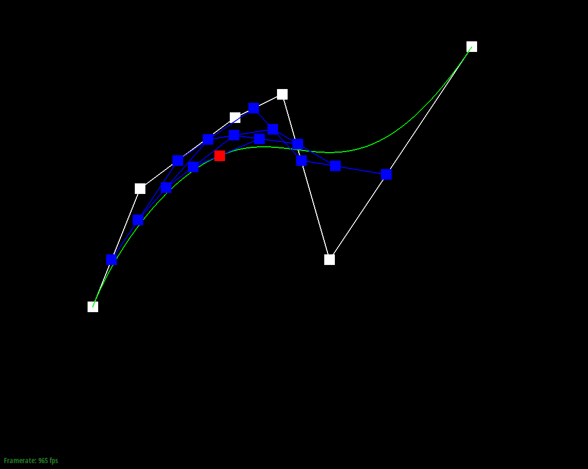

Overview
Give a high-level overview of what you have implemented in this assignment. Think about what you have built as a whole. Share your thoughts on what interesting things you have learned from completing this assignment.
This project looked into implementing the De Casteljau Algorithm to interact with Bezier Curves/Surfaces, and some basic triangle mesh editing operations to edge-flip, edge-split, and upsample meshes. The mesh editing algorithms were implemented using the half-edge data structures. From these algorithms, the upsampling method was implemented to smoothen the mesh structures, which could then be used for detailed phong shading.
Through the completion of this project, I gained a much better grasp on the concepts of geometric modeling and mesh rendering as they relate to more complex concepts such as phong shading, and mesh modeling. Triangle meshes, and meshes as a whole are fundamental to the graphics pipeline for geometric modeling and rendering. For example, Epic Games, in their unveiling demo for Unreal Engine 5, dedicated a significant portion of time discussing how they were able to compress large triangle mesh structures data for highly detailed real-time rendering with ray-tracing. In this manner, this project allowed me to get a better understanding of this crucial component in the graphics pipeline. For example, I gained a much stronger understanding of proper mesh traversal, mesh manipulation through half edges, and pointer manipulation. I also gained even more respect for graphic engineers, especially those who work with C++, because of the time it took me to implement half-edge pointer manipulation for the simplest mesh manipulation functions.
The results of the successful implementation of this project and its various functions can be observed by the final images shown in this webpage.
Section I: Bezier Curves and Surfaces
Part 1: Bezier curves with 1D de Casteljau subdivision
A Bezier curve is a parametric curve defined by N distinct control points. These distinct control points are then used to generate a smooth curve. As discussed in lecture, the de Casteljau Algorithm is a recursive method used to compute this smooth curve by linearly interpolating the N adjacent control points to generate N-1 new control points with a shared parameter t in range [0, 1]. This process is repeated on the newly generated control points until it converges to a single point. This point lies on the Bezier curve, and is the value of the Bezier curve when evaluated at the given parameter t. In this manner, by iterating through all values of t and applying the de Casteljau Algorithm, we are able to generate the complete Bezier curve (see figure below for graphical explaination).
The actual implementation of this algorithm in the code was completed in the evaluateStep() function whose input is a vector of control points. The function then iterates through the control points and applies the interpolation between adjacent points and stores the output in an intermediate vector list of control points. This vector list ends up being of length points.size() - 1. Effectively, this function completes one step of recursion for the de Casteljau Algorithm. Hence, this function acts as a helper function for later methods that define, render, and manipulate Bezier curves and surfaces.
The following sequence of images show the progression of the de Casteljau Algorithm from our implementation on a 6 point Bezier curve, for a fixed shared parameter value, which is then changed in the final image to show the change in Bezier curve evaluation. In these figues, the green curve is the final Bezier curve, the blue points and line segments are the intermediate linear interpolated points (and edges) for a given fixed shared parameter t, and the red square point is the final point generated upon recusive convergence for the same parameter t.

|

|
|

|

|

|

one of the control points changed. |
Changing t parameter. |
Part 2: Bezier surfaces with separable 1D de Casteljau subdivision
Task 1 implemented the De Casteljau Algorithm to work with Bezier Curves that are defined in the 2D space. However, as shown in the figure, the algorithm can be extended into the 3D space to compute Bezier surfaces, by computing a Bezier curve along one dimension, and then using the output points to compute a Bezier curve along the other.
On a high-level, given NxM matrix of control points, and shared parameters u, v, a point on the corresponding Bezier surface can be computed by first evaluating a point on N Bezier curves each defined by M control points (rows of matrix) with the shared parameter u using the same algorithm as Part 1. Then, the corresponding bezier curve defined by these N output control points is used to evaluate another point with the shared parameter value of v. This output point lies on the Bezier surface. Hence, by traversing along u and v, we can sample all the points on the Bezier surface.
To implement this, the evaluate1D() function was used as a helper to compute a point on the Bezier curve for a specific parameter value. This helper function was called iteratively in the evaluate function for each row of the control point matrix with parameter u, to get the N output control points whose values were stored in an intermediate vector list ( where N = controlPoints.size()). These N points were then again inputted into the helper function with parameter value v to return a final output point that lies on the Bezier surface.

(with wireframe). |
(without wireframe). |
Section II: Sampling
Part 3: Average normals for half-edge meshes
Phong shading is a method that uses area-weighted vertex normals per vertex in place of triangle normals per triangle to interpolate and shade the surface of a mesh. As a result of the increased number of normals, and the fact that they are area-weighted, it tends to look much smoother in comparison to flat shading as shown in the figures below.
To compute the normal vector n of a vertex, we iterate through all the adjacent triangles to that vertex using the half-edge data structure for the mesh, and add the normal vectors for those triangle faces in a vector. The triangle normal vectors are computed by taking the cross product of the neighboring edges of the triangle. After the iterations are complete, we then normalize n to get the area-weighted unit normal vector of the given vertex.
|
(flat shading without wireframe). |

(Phong shading without wireframe). |
Part 4: Half-edge flip
As shown in the diagram above, the half-edge flip function causes the edge splitting the two triangles to flip in orientation and connect to the vertices not previously connected to. In this manner, this function simply reassigns points values for the various elements defined within the half-edge mesh data structure. To implement this function, I employed the recommendations suggested in the spec and defined and set the pointers to the correct elements in the modified mesh for all elements in the modified mesh. This even included any elements that would not end up changing in the modified mesh. Nevertheless, because runtime is essentially O(1) for this function, these additional pointer assignments would not significantly increase runtime. More importantly, it ensured I did not miss any pointer manipulations that would result in a painful debugging process.
On a high-level overview, I first obtained the various elements of the half-edge data structure corresponding to the given triangles and inputted edge. After obtaining these references, I proceed with re-assigning the elements defining the half-edge pointers using the setNeighbors function such that the edge is flipped. I then continue with the reassignment process for the rest of the elements (vertices, edges, faces) using these reassigned half-edges. Upon completion, the modified mesh has the corresponding inputted edge successfully flipped.

|
|
Part 5: Half-edge split

Similarly, as shown in the diagram above, the half-edge split function splits two adjacent triangles by an edge connecting the two previously unconnected vertices. In this manner, this function adds 1 new vertex, 3 new edges, 6 new half-edges, and 2 new faces to the mesh. To implement this function, I used the same method of rigorous and at times redundant pointer reference and reassignment for all corresponding elements in the mesh alongside the newly created elements added to the mesh. This helped prevent any painful debugging processes.
On a high-level overview, I first obtained the various elements of the half-edge data structure corresponding to the given triangles and inputted edge. After obtaining these references, I create the new elements and add them to the mesh: 1 new vertex (m), 3 new edges, 6 new half-edges, 2 new faces. I assign the position of vertex m to be the midpoint of the original shared edge (bc in the diagram), and set the isNew value to true. I also set the isNew value to true for the newly created edges that connect to m, and ensure the original shared edge has its isNew value set to false to prevent issues in the loop subdivision algorithm for task 6.
I then proceed with re-assigning the elements defining the half-edge pointers using the setNeighbors function to account for the newly created elements and the split mesh state. I then continue with the reassignment process for the rest of the elements (vertices, edges, faces). Upon completion, the modified mesh successfully splits adjacent triangles along the inputted edge.
|
|

|
|
Part 6: Loop subdivision for mesh upsampling
Level sampling enables us to address the instance where a single pixel in the surface to be mapped corresponds to multiple pixels in the texture map (texels). As mentioned in lecture, this issue is especially prominent in minification i.e. when trying to map textures to walls and floors in the backgrounds of a scene. If these textures are of high resolution and have high frequency features or details, their mapping onto the background surfaces without level sampling can produce moire patterns, jaggies and other aliasing artifacts. This is since adjacent pixels will differ very significantly in the original texture, but due to their minification, the mapping algorithm will jump between these varying pixels leading to a non-uniform mapping of the surface.
In our implementation of level sampling we used Mipmaps. Mipmaps essentially cache iteratively downsampled versions of the original texture at the cost of some memory. This method of implementing level-sampling by caching rather than computing on the spot significantly reduces the runtime for texture mapping. What’s more, as discussed in lecture 5, the additional cost of memory for Mipmaps is only ⅓ the memory used to store the original texture map, making the use of Mipmaps for level sampling more computationally sound given their significant improvement on rendering (see examples below).
The implementation of Mipmaps for texture mapping involves figuring out which Mipmap level to use when mapping the texture to a surface in screen space. This was done by taking the derivatives of the texel corresponding to the point sampled from the surface (d(x, y)/d(u, v)), and the texel corresponding to an adjacent point on the surface, and finding the magnitude of distance between these two derivative values after they are scaled by width and height of the texture map for dx and dy respectively. Taking the log of this magnitude value, the Mipmap level is then simply the output from the log, or the nearest integer value to the log output, depending on which level sampling method is used (Nearest or Bilinear respectively). If using the continuous log output (for Bilinear level sampling), the sampling method uses a weighted sum of the sample from each of the adjacent mipmap levels as described in lecture 5.
On a high level, the difference in derivative allows us to find out the degree of high-frequency details the texture has (how much change in values exists between adjacent texel values). As complexity of the texture increases, the level chosen from the Mipmap decreases in resolution (more downsampled) to avoid aliasing artifacts from minification of high-frequency features.

|

|

|

|

Image is the smoothest as shown in the gradient coloring of the roof.
When determining the tradeoffs between speed, memory usage, and antialiasing power between the three various techniques, it was found that fastest rendering with least memory usage occurred when using nearest sampling with zero level sampling. This makes sense as nearest sampling does not use interpolation, so the lack of additional steps makes sampling faster. Zero level sampling proceeds by using the original texture image for mapping, which avoids the additional steps involved with MipMaps. However, this resulted in the worst amount of aliasing artifacts in the image, with the least amount of anti-aliasing power.
Nearest level sampling tended to have runtime between zero level and bilinear level sampling, but memory usage similar to zero-level sampling, as it required the overhead for level sampling, but no additional memory usage beyond that like as needed with the weighted sum computation of bilinear level sampling. As a result, it also tended to have anti-aliasing power higher than zero-level sampling but lower than bilinear level sampling.
Bilinear level sampling has the slowest runtime with the most memory usage, as it both requires the overhead of level sampling, and the interpolation computation between levels which requires the caching and sampling of multiple levels during mapping. Nevertheless, it also has the greatest anti-aliasing power due to its ability to interpolate features on the texture map across resolutions when mapping to the surface.
Likewise, when combined with the various pixel sampling techniques, we find that bilinear pixel sampling tends to outperform nearest pixel sampling in terms of anti-aliasing power across the board, but at the cost of being consistently slower in speed. The combination that led to the greatest anti-aliasing power, at the cost of using the most memory and being the slowest, was bilinear pixel sampling with bilinear level sampling (AKA trilinear sampling), as it performed a weighted sum computation for both adjacent pixels and levels, for the highest resolution of interpolation.
*An interesting error, or bug that was discovered was that when using trilinear sampling, if we increase the sampling rate, the surface turns black. However, if we revert the sampling rate and then increase it again, the surface properly maps the texture with the updated sampling rate as it should have in the first place. I was unable to determine the cause of this bug, but my hypothesis is that the issue relates to some issue in the rendering pipeline, or the way memory is managed that is causing the rasterizer to incorrectly map all the pixels on the surface to 0 (black). I say this because the issue is not encountered when increasing sampling rate for texture mapping when using nearest layer sampling with either bilinear or nearest pixel sampling, or any other combination, all of which uses less computation power and memory than trilinear sampling.